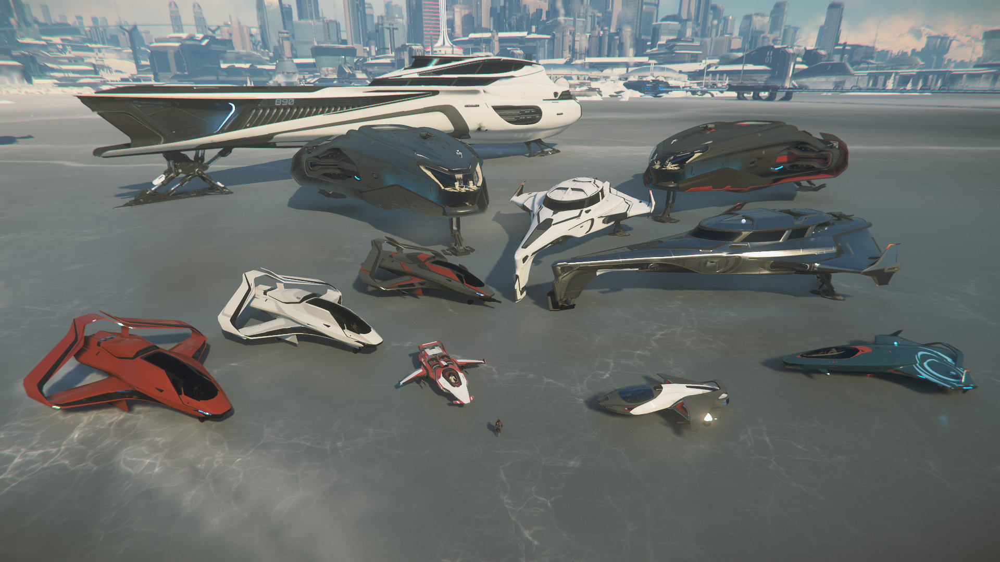

Origin Jumpworks GmbH is a spaceship and engine manufacturer of high quality and luxury products. Their headquarters is based in Terra.
Photo by Yannock
If it is possible for a company to merge class and sophistication with the sheer risk of spaceflight and the cold-blooded nature of interstellar dogfighting, Origin Jumpworks GmbH comes the closest. The company's extensive array of high-end spacecraft is known for their sleek and sophisticated lines. Similarly, they have cultivated an exclusive customer base from the rich and the powerful. As Origin's perfectly-manicured salesmen eagerly point out, selecting an Origin design doesn't just mean buying a ship … it means choosing a lifestyle.
Origin was incorporated in the mid-28th century. For their first decade, the company produced high quality fusion engines used by the UEE military and mounted on the ostentatious Roberts Space Industries and Aegis Dynamics star yachts available to the public (at least, the well-heeled public) at the time. With the need for personal spacecraft growing exponentially, Origin moved to compete with the companies they initially supplied.
Within ten years, the company was producing a top-five selling midscale composite transport and within fifty their well-paying customer base was neck and neck with RSI for gross profits in the manufactured spacecraft field. Origin premiered their initial 200 and 300 lines of personal ships in 2899 and has held a strong second in that market ever since.
Founded on the banks of the Rhine in Cologne, Germany, Origin had strong ties to Earth for the first two centuries of their existence, originally going so far as to insist that every component for their elite 600 line be manufactured in-Sol. In recent years, these ties have been severed completely.
Declaring Terra the new cultural capital of the UEE, President Jennifer Friskers made the then-unpopular decision to relocate to Terra. In a largely unexpected executive order, she moved corporate headquarters and the primary design team to the settlement of New Austin in 2913. Since that time, manufacturing has become nearly completely outsourced, with only an engine testing facility remaining on Earth's moon. Government scrutiny of the company since the move has also flourished, with tax issues quadrupling following the decision to leave Earth.
New Austin has since become an "Origin town," with the company holding fast as the key employer (Omega Foods, the corporate entity responsible for the Crab-O chain, is a distant second). The system has become a mecca for Origin enthusiasts, with wealthy buyers traveling across the galaxy to purchase their ships straight from the factory floor. A stunning company showcase in the center of the city highlights M50s, 300s and 890 JUMPs in a series of life-sized action dioramas costing millions to set up and display, and Origin has sponsored naming rights for local stadiums, high schools and streets. Tourists leaving New Austin without a 300 Series shotglass or keychain is nearly unheard of!